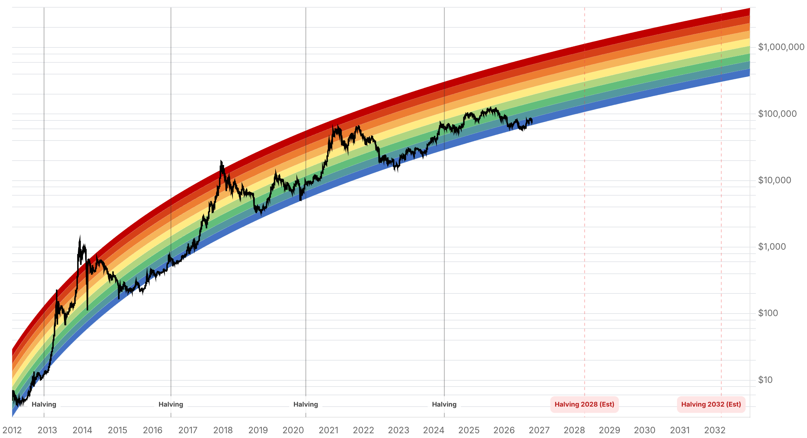

Reporte financiero
BTC cotiza en USD 81.581,34 en vivo (07:17 UTC), -0,32% frente al cierre anterior (USD 81.844,43) y da marcha atrás parcial al rebote de fin de semana reportado ayer: el precio tocó USD 81.853,54 al cierre del lunes 19 y hoy retrocede levemente, quedando dentro del rango de USD 81.400-81.900 que había definido como 'resistencia inmediata' el reporte de ayer, en vez de confirmar una ruptura sostenida por encima de los USD 82.700. El Fear & Greed Index también cede terreno -de 59 a 55-, aunque se mantiene en zona 'Greed'. Las liquidaciones de derivados en el mercado cripto siguen enfriándose: de los USD 315,2M del viernes 16 (66,3% largos) bajaron a unos USD 359M acumulados durante todo el fin de semana (vs. picos de USD 937-972M el 15 de octubre), señal de que la purga de posiciones apalancadas sigue normalizándose. No hay cifra nueva confirmada de flujos de ETF de Bitcoin para la sesión del lunes 19 de octubre -las fuentes habituales (Farside/SoSoValue) todavía no publican el dato al momento de este reporte-, por lo que el acumulado de octubre se mantiene en el último valor confirmado: aproximadamente USD -617M en salidas netas hasta el 16 de octubre. Lo más nuevo desde ayer es un detalle concreto sobre la apelación del fallo de la High Court británica sobre los 61.000 BTC incautados a Zhimin Qian: según el Financial Times, Fieldfisher (el estudio que representa a las víctimas chinas) confirmó que apelará, y se espera que la apelación se resuelva recién en 2027 -un horizonte más largo del que se sabía ayer, cuando solo se sabía que 'los abogados estaban apelando' sin fecha-. El PBI del tercer trimestre de China, cuya publicación estaba prevista para el 19 de octubre y se mencionó como catalizador pendiente en el reporte de ayer, no pudo confirmarse con una cifra oficial en las fuentes consultadas hoy -se deja constancia del vacío de información en vez de citar una cifra no verificada-. El resto de los ejes no tiene novedad: Strategy/Saylor sigue en 848.250 BTC sin compra nueva confirmada; el plazo de Blumenthal a Cantor Fitzgerald por su vínculo con Tether vence en 3 días (23 de octubre), sin respuesta pública; y la Clarity Act sigue estancada desde el fracaso de cloture del 15 de septiembre, sin fecha de nuevo intento.
Tras cerrar el lunes 19 en USD 81.853,54, BTC retrocede hoy a USD 81.581,34 en vivo (07:17 UTC, -0,32% vs. cierre anterior de USD 81.844,43). El movimiento queda contenido dentro de la banda de USD 81.400-81.900 que el reporte de ayer había identificado como la zona de lateralización reciente -el repunte hasta USD 82.784 del domingo no se sostuvo-. El Fear & Greed Index bajó de 59 a 55, un retroceso de 4 puntos que lo mantiene en 'Greed' pero sin la aceleración que mostró el fin de semana.
Las liquidaciones del mercado cripto (todos los activos) bajaron a unos USD 359M acumulados durante el fin de semana, frente a los USD 315,2M del viernes 16 y muy por debajo del pico de USD 937-972M del miércoles 14/jueves 15 de octubre (cuando el dato de inflación de septiembre golpeó a los mercados de riesgo). La tendencia confirma la lectura de Binance de ayer: la purga fue 'un shock de sentimiento', no una ruptura estructural, y el apalancamiento excesivo se sigue liquidando de forma ordenada en vez de en nuevas cascadas.
El estudio Fieldfisher, que representa a las víctimas chinas del esquema Ponzi de Zhimin Qian, confirmó ante el Financial Times su intención de apelar el fallo del 12 de octubre de la High Court (que determinó que la ley china, no la inglesa, rige los reclamos de propiedad sobre los BTC incautados). Lo nuevo es el horizonte temporal: se espera que la apelación se resuelva recién en 2027, un plazo más largo del que se conocía ayer. Mientras tanto, la titularidad final de los ~USD 5.000M en Bitcoin sigue sin resolverse y el caso permanece en Londres.
Pese a que el lunes 19 de octubre sí fue una rueda bursátil normal en EE.UU., ni Farside ni los trackers habituales (TFTC/SoSoValue) tenían publicado el dato de flujo neto de ETFs de Bitcoin al momento de este reporte -el último valor confirmado sigue siendo el acumulado hasta el viernes 16 de octubre (~USD -617M en el mes). Se deja constancia de este vacío en vez de estimar o inventar una cifra para el lunes; se debe revisar nuevamente en el próximo reporte.
El reporte de ayer mencionaba la publicación del PBI chino del tercer trimestre como catalizador pendiente para el 19 de octubre. Las fuentes consultadas hoy no arrojaron una cifra oficial confirmada de la Oficina Nacional de Estadísticas de China (NBS) para ese dato -se señala la ausencia de confirmación en vez de citar una cifra no verificada (el consenso de mercado previo a la publicación rondaba 4,3%-4,6% interanual, pero no reemplaza al dato real).
Strategy permanece en 848.250 BTC, sin compra nueva confirmada desde el filing del 12 de octubre. El plazo del senador Blumenthal para que Cantor Fitzgerald responda sobre su participación en Tether vence en 3 días (23 de octubre), sin pronunciamiento público de ninguna de las dos partes. La Clarity Act sigue estancada desde el fracaso de cloture del 15 de septiembre, sin fecha de un nuevo intento de voto en el Senado.
| Periodo | Valor |
|---|---|
| 14 oct | 81562.49 |
| 15 oct | 82141.46 |
| 16 oct | 81500.8 |
| 17 oct | 81382.15 |
| 18 oct | 82017.6 |
| 19 oct | 81853.54 |
| 20 oct (en vivo) | 81581.34 |
| Periodo | Valor |
|---|---|
| Fear & Greed | 55 |

“La venta por pérdidas del jueves 15 de octubre cerca de USD 80.000 puede marcar un piso local; el True Market Mean (costo base promedio del mercado) en la zona de USD 77.500-78.000 sigue siendo el soporte de referencia si la debilidad continúa.”
“La caída inducida por los datos de inflación fue un shock de sentimiento, no una ruptura estructural.”
El precio volvió a quedar contenido en la banda de USD 81.400-81.900 tras no sostener el repunte a USD 82.700+ del fin de semana, con el Fear & Greed cediendo de 59 a 55 (sigue en 'Greed'). Los niveles técnicos de Bitcoin.com News (soporte USD 80.000-81.000, resistencia USD 83.000-84.000, RSI diario 48-49) siguen vigentes sin cambios. La agenda macro de la semana -permisos de construcción en EE.UU. (20 de octubre), solicitudes semanales de desempleo (22 de octubre) y PMIs preliminares (23 de octubre)- puede generar volatilidad de corto plazo antes del apagón de comunicaciones de la Fed previo a la reunión del 27-28 de octubre.
El rango de QCP Capital para el Q4 (USD 80.000-90.000) sigue vigente. Las salidas acumuladas de ETF en octubre (~USD 617M, sin dato confirmado todavía para el lunes 19) siguen siendo la señal de demanda institucional más débil del mes, sin que el repunte de precio del fin de semana se haya traducido en un cambio de tendencia de los flujos. El PBI del tercer trimestre de China, publicado en teoría ayer, queda como un dato pendiente de confirmar en el próximo reporte -su resultado puede afectar el apetito por riesgo global si se aleja mucho del consenso previo (4,3%-4,6% interanual).
Sin cambios en los objetivos de precio de largo plazo ya reportados en ediciones anteriores (Citigroup, Bernstein, Standard Chartered, Tom Lee, NYDIG, Armstrong). En el frente regulatorio/legal, la apelación confirmada por Fieldfisher sobre el fallo de la High Court británica (61.000 BTC, ~USD 5.000M) ahora tiene un horizonte más claro -resolución recién en 2027 según el Financial Times-, lo que implica que la titularidad final de esos fondos seguirá sin resolverse durante más de un año. La Clarity Act en EE.UU. sigue sin fecha de reintento, y el plazo del 23 de octubre para la respuesta de Cantor Fitzgerald a Blumenthal sigue siendo el próximo hito concreto a vigilar en el eje Tether.
El precio volvió a caer dentro de la banda de USD 81.400-81.900 tras tocar USD 82.784 el domingo, sin lograr un cierre diario sostenido por encima de esa zona. Mientras no haya un cierre claro por encima de USD 83.000 (inicio de la resistencia identificada por Bitcoin.com News) ni confirmación de entradas de ETF, es prematuro posicionarse para una tendencia alcista de corto plazo.
Dos datos relevantes para la lectura de apetito por riesgo global -el PBI del Q3 de China y el flujo de ETF del lunes 19- no estaban confirmados al momento de este reporte. Conviene esperar su publicación antes de interpretar el retroceso de hoy como algo más que ruido de corto plazo.
Con el CPI de septiembre confirmado en 3,7% y la Fed con sesgo hawkish desde septiembre, posicionarse para un recorte sorpresa en la reunión del 27-28 de octubre como escenario base no está respaldado por la evidencia actual. El apagón de comunicaciones de la Fed esta semana reduce además la probabilidad de señales nuevas antes de la reunión.